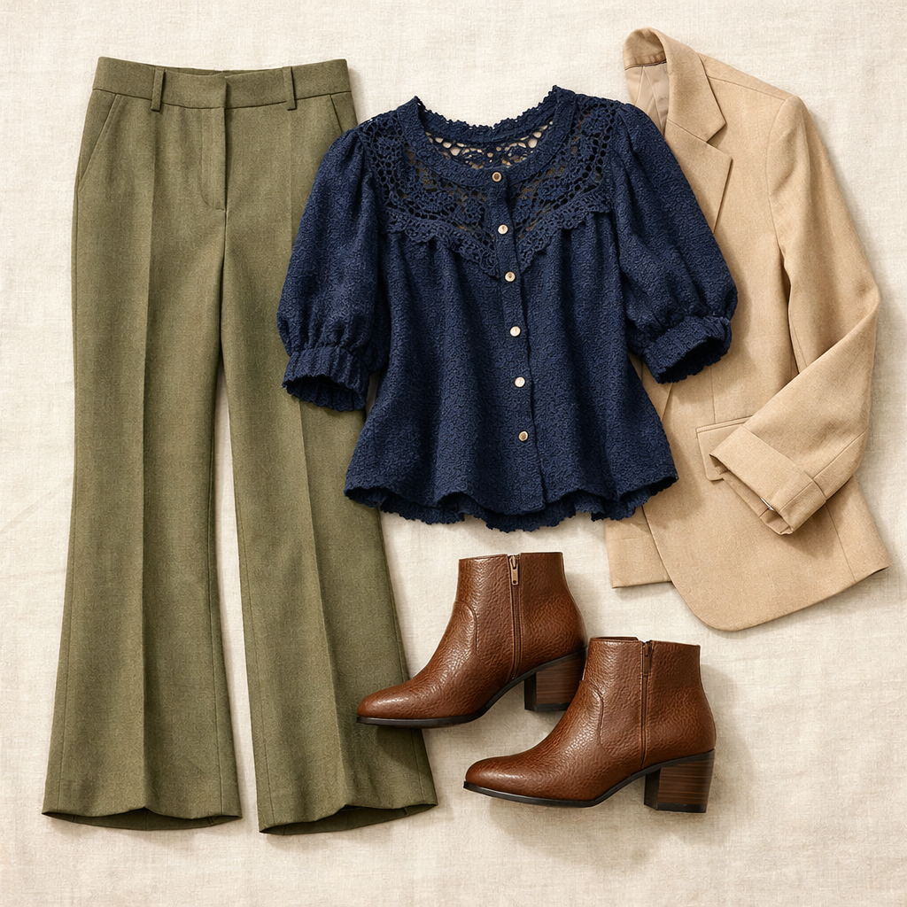
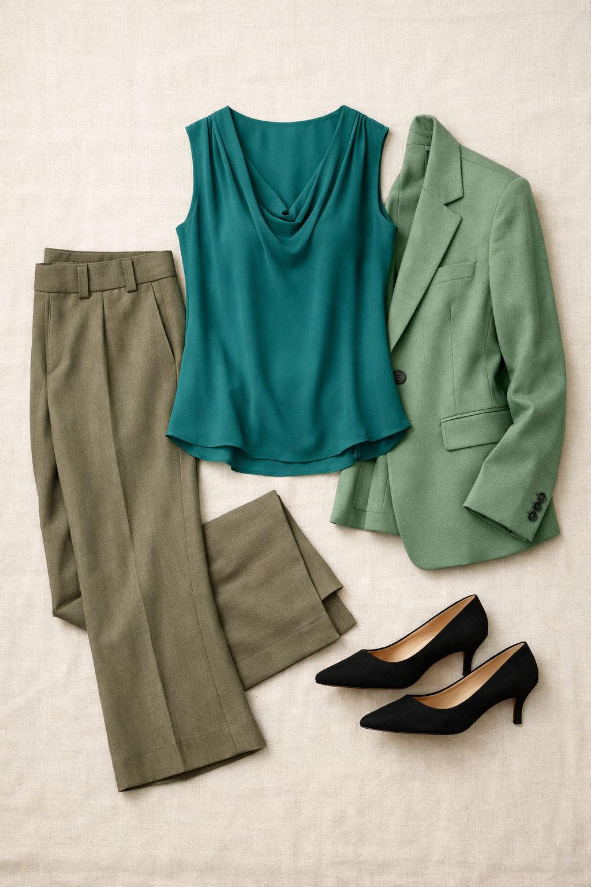
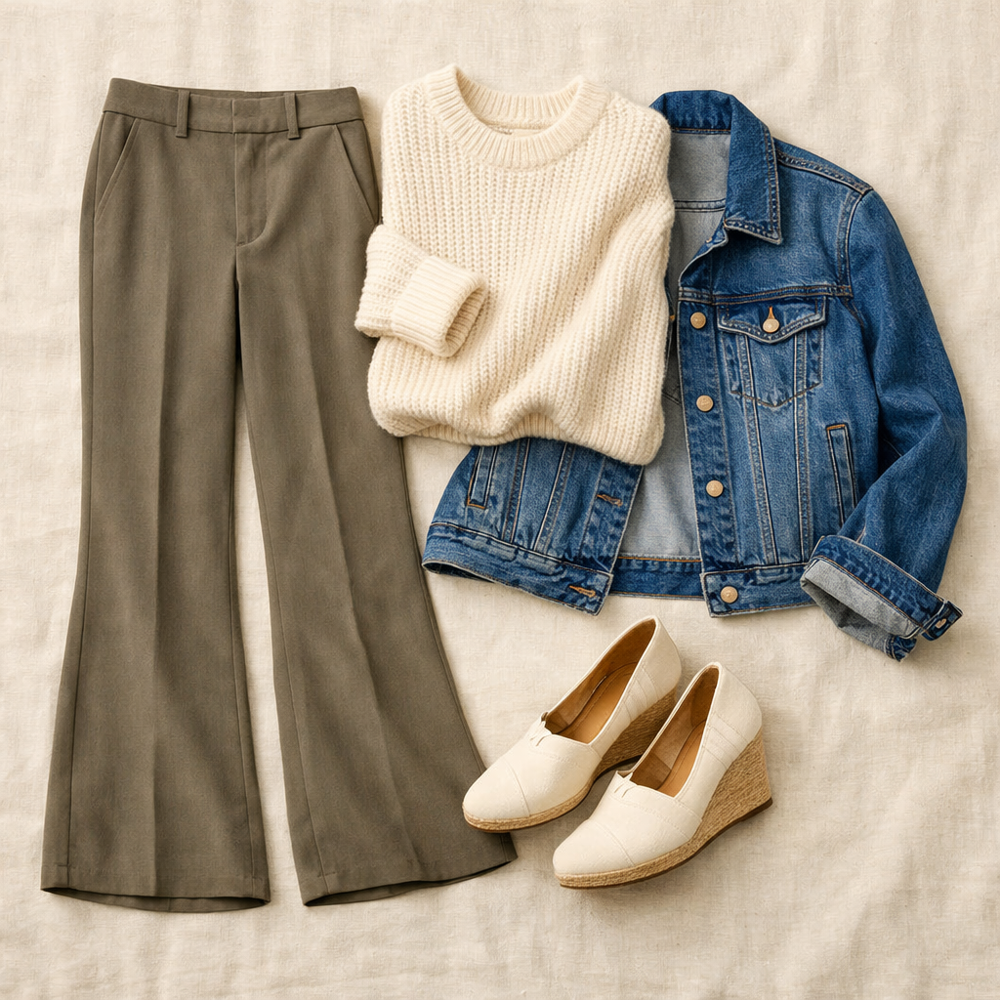

Ann Taylor
Jayne Trouser — Dried Moss
$119
Ann Taylor's #1 bestselling trouser in a rich warm taupe-green. The slight flare gives it a modern editorial silhouette while the tailored waist keeps it office-appropriate. Dried Moss is a beautifully versatile earthy green that bridges warm neutrals and jewel tones.
Shop NowWhy This Pick
The Jayne is Ann Taylor's bestseller for a reason — the slightly flared leg is universally flattering and the Dried Moss color lives beautifully between the warm neutrals and green families. It anchors tonal looks and complements jewel tones equally well.
3 Ways to Wear It
Styled with pieces already in your closet

Look 1 — Warm Earthy Sophistication
Navy Daniel Rainn crochet blouse (#43) + Light tan/beige blazer (#208) + Brown pebbled booties (#504). The navy blouse pops against the earthy moss, the beige blazer bridges the tones, and the brown booties complete the warm-palette story.

Look 2 — Green Tonal Power
Teal Daniel Rainn sleeveless blouse (#59) + Sage/teal blazer (#205) + Black kitten heels (#517). Green-on-green tonal with a dark shoe anchor. Bold and editorial — the kind of look that commands a room without saying a word.

Look 3 — Weekend Polished
Ivory/cream sweater (#69) + Denim trucker jacket (#211) + Cream TOMS wedges (#513). Casual enough for brunch, polished enough for a client meeting. The cream and denim lighten the earthy moss beautifully.